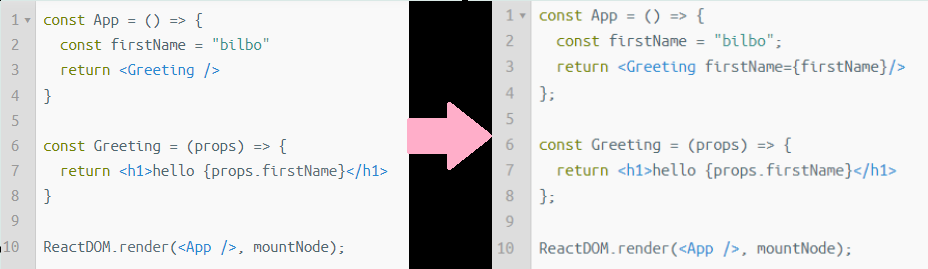

Week 7
BEST PART OF THE WEEK:
I did enjoy continuing our work using Mongo.
However, the highlight of the week has to be the to-do list assignment. despite encountering a minor hiccup at the start, the issue was quickly resolved and I was able to get stuck in. The task provided an opportunity to apply the concepts of what we'd learnt, push the boundaries of my understanding, and express my own creativity. I was happy with my completed work.
WORST PART OF THE WEEK:
I honestly cannot think of a bad part of the week for coding. Therefore, enjoy this video, as my worst part of the week was finishing season 2 of 'The Bear'.
3 NEW FACTS:
- 3 ways to use conditional rendering:
short circuit evaluation
if statement
ternary operator - Linking up Mongo Atlas
- React uses a compiler (such as Babel) to turn JSX back to vanilla JS
PROBLEM I SOLVED:
We were tasked with solving several problems using JS Complete. I enjoyed this assignment as the hands-on experience was a clear indicator that I understood the work and gained confidence in my ability to apply it in future projects.
